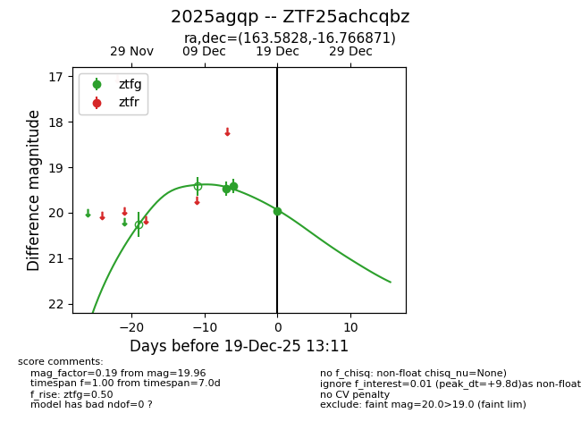
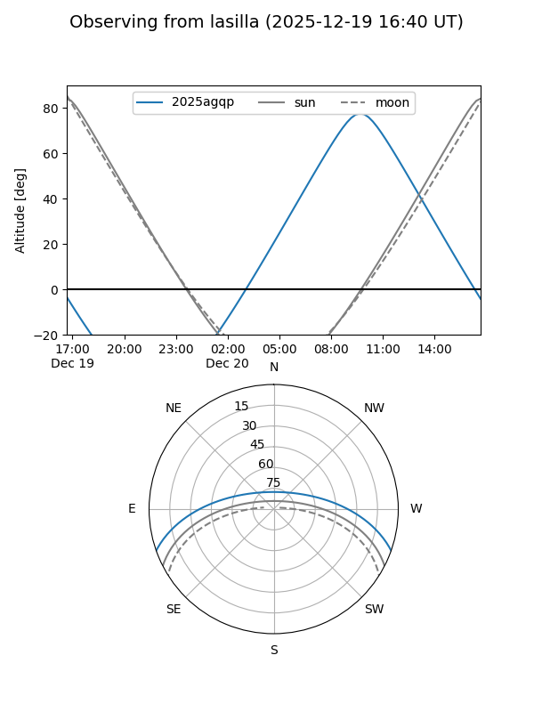
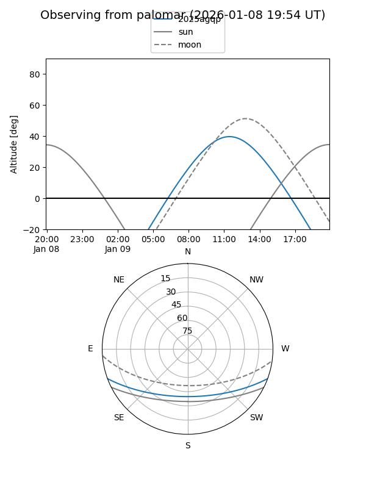

2025agqp
Target 2025agqp at 2026-01-09 12:49
Aliases and brokers:
FINK: link
Lasair: link
ALeRCE: link
TNS: link
YSE: link
alt names
ZTF25achcqbz (ztf,fink_ztf)
2025agqp (tns,yse)
Coordinates:
equatorial (ra, dec) = 163.5828,-16.76687
equatorial (HMS+DMS) = 10:54:19.88,-16:46:00.73
galactic (l, b) = (266.6382,+37.71713)
Flags:
Photometry:
last ztfg=19.96
3 ztfg detections
Lightcurve

Visibility


Additional plots